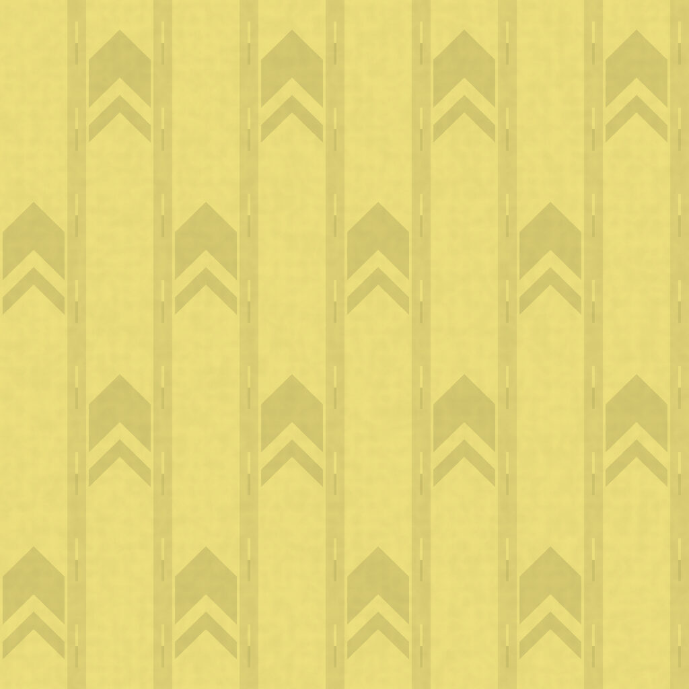
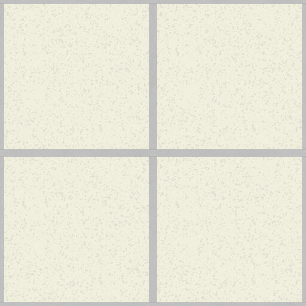
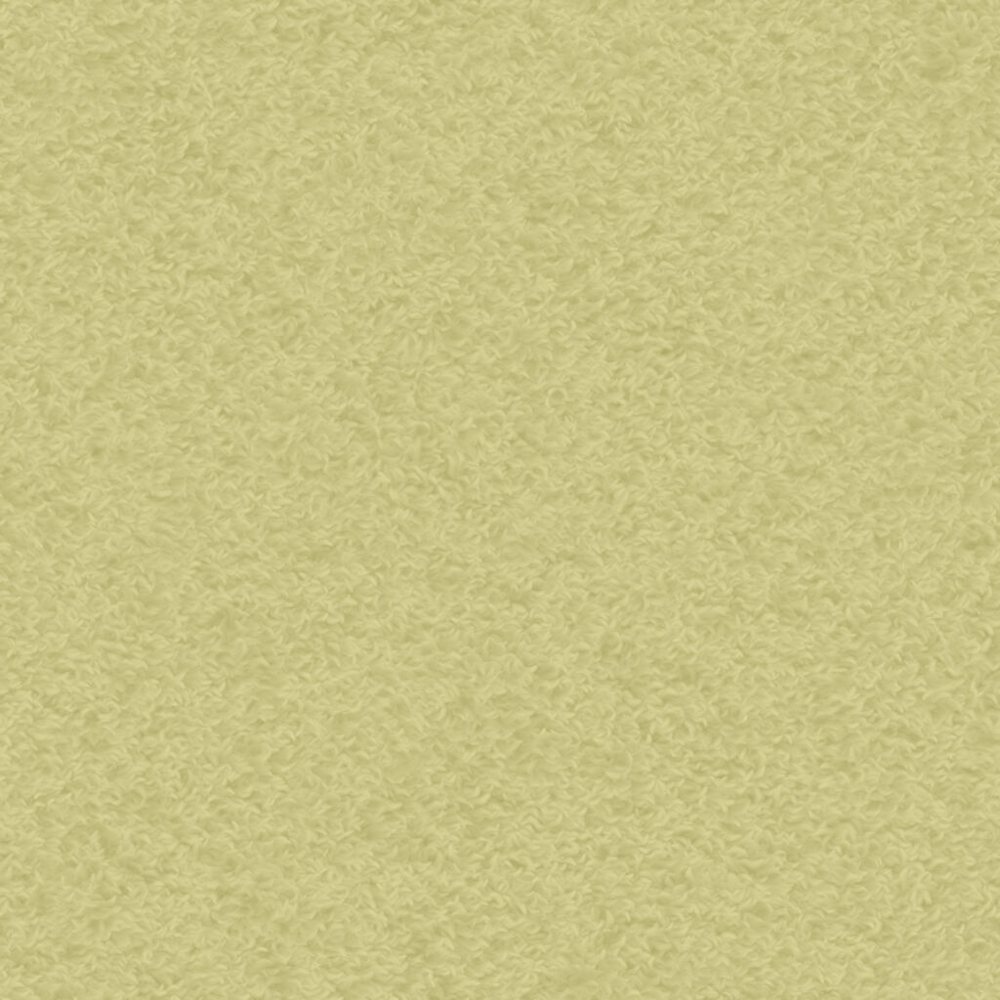
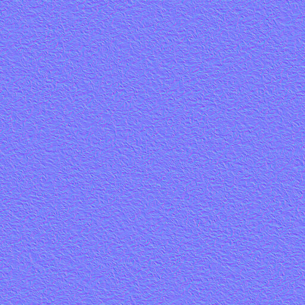
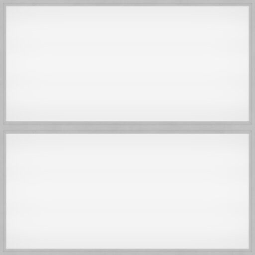

UM EXPERIMENTO DE INCERTEZA ESPACIAL
VR: BALANCE OS BRAÇOS PARA ANDAR // PINÇA NA TESTA LIGA/DESLIGA O VISOR ZETA
PALMAS NA PAREDE = SALTO DE FASE // MÃOS NOS OLHOS = SE PROTEGER
OLHE PARA O PULSO = PAINEL Q-LINK
PINÇA PARA PEGAR O QPS // LEVE A ÁGUA DE AMÊNDOA À BOCA




